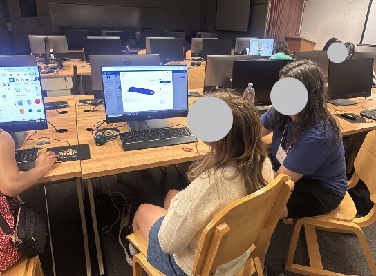
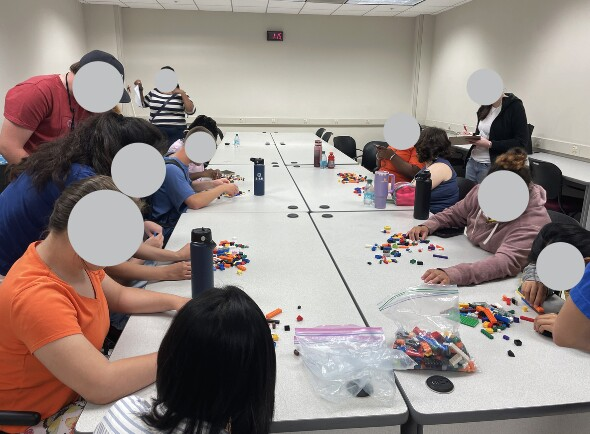
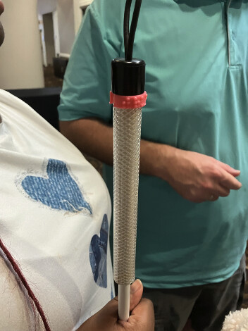

Hands-on activities sustained engagement.
Tactile models and direct printer interaction made abstract concepts more concrete and supported growing confidence.
Second author · Co-researcher · ASEE 2026
A four-day community workshop that combined tactile exploration, engineering mentorship, accessible instruction, and personally meaningful 3D-modeling projects.
Publication ↗Challenge
Students who are blind or low vision often encounter limited access to spatial concepts, modeling software, role models, and individualized technical support. The workshop tested tactile and community-supported ways to introduce design and fabrication.
Study focus
How did tactile activities, accessible instruction, and mentorship shape engagement and confidence?
What should educators change when designing future 3D-modeling programs with blind and low-vision students?
Workshop journey
Observation, photographs, recordings, and staff reflections were considered together to connect student experiences with specific curriculum and facilitation decisions.



Key insights
Tactile models and direct printer interaction made abstract concepts more concrete and supported growing confidence.
Meeting a blind engineering professional helped students envision technical careers and discuss accessibility openly.
Different technical experience and learning pace called for mentor preparation, differentiated instruction, and meaningful project choices.
Outcome
The workshop surfaced design priorities for community organizations and educators developing inclusive digital-fabrication programs.